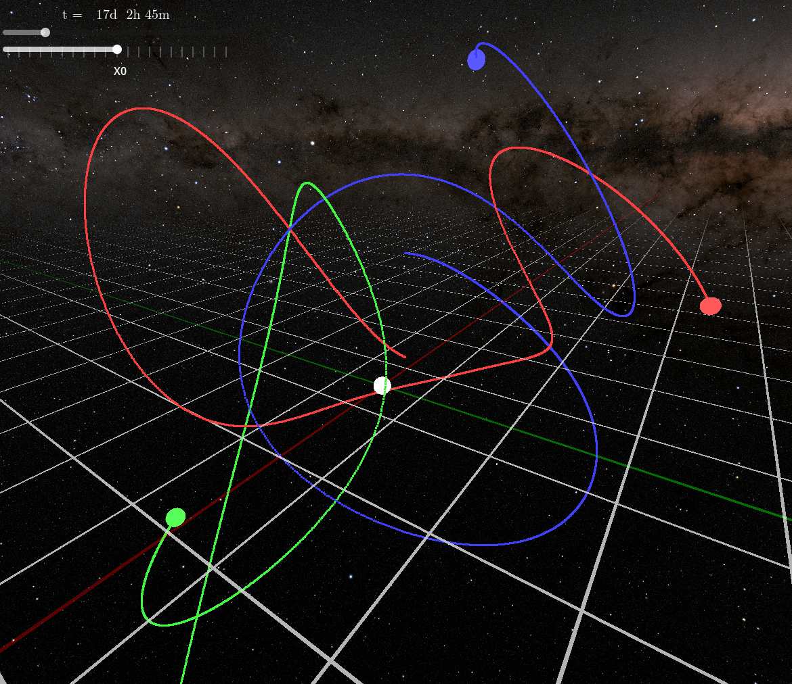

NCRS
N-body & CR3BP Simulation

NCRS simulates N-body and CR3BP, and save the result in a .ncrs file.
.ncrs is a compact binary file format desinged for this program and its visualization program, NCRS-vis.
NCRS-vis

3 Earths' chaotic gravitaional dance visualized